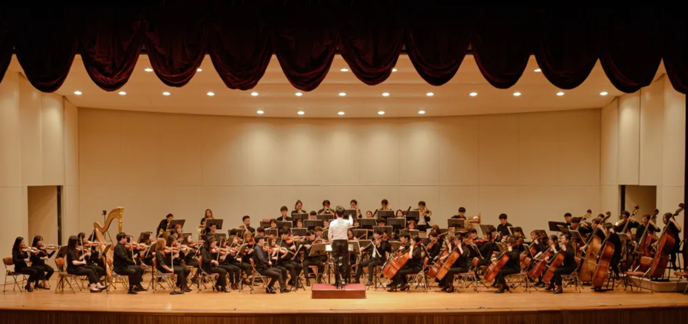
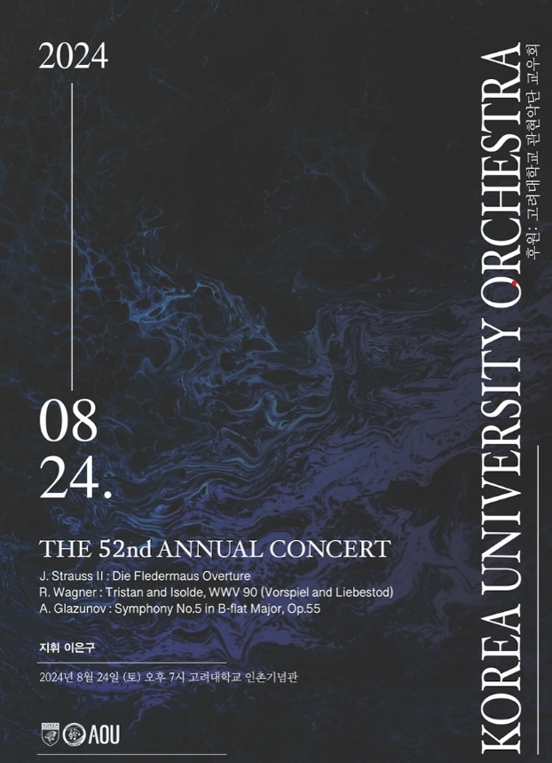
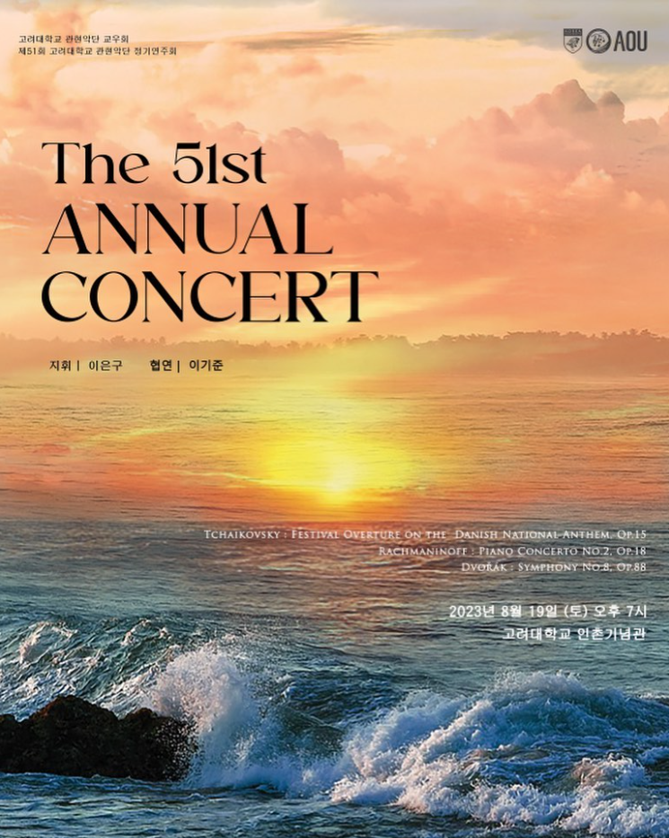
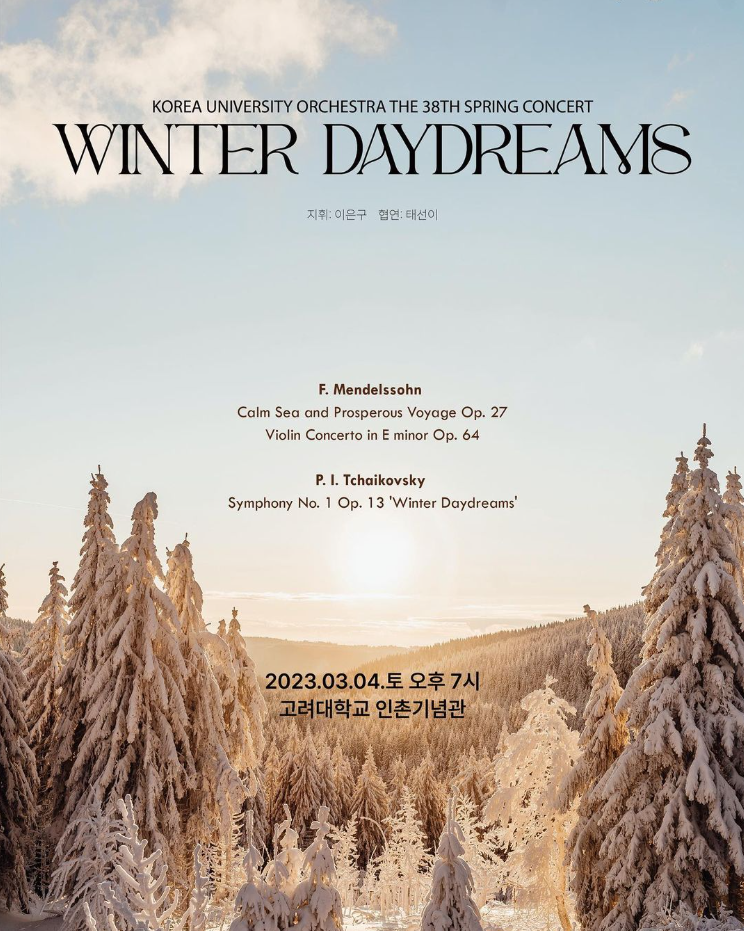
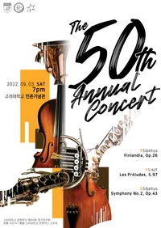

“다양한 활동을 통해 음악을 즐기고 단원들이 가득한 동아리"
고려대학교 중앙동아리 관현악단은 음악에 대한 열정으로 하나 된 학생들이 함께 만들어가는 오케스트라 동아리입니다.
매주 진행되는 정기 활동은 단원들이 각자의 역량을 발전시키고,
서로의 조화를 통해 아름다운 음악을 완성할 수 있는 기회를 제공합니다.
관현악단의 활동은 신입 단원 위주의 연주 모임인 팝스(월요일)를 시작으로,
관악기만 모여 연주하는 파이퍼스(수요일), 현악기 중심의 앙상블 MC(목요일),
그리고 모든 악기가 함께 완전한 오케스트라를 이루는 집회(화요일)로 구성되어 있습니다.
초보자도 부담 없이 참여할 수 있도록 문을 활짝 열어둔 동아리로,
대학 시절 음악을 배우고 즐길 수 있는 최고의 기회를 제공하고 있다고 자부합니다.

“다양한 활동을 통해 음악을 즐기고 단원들이 가득한 동아리"
고려대학교 중앙동아리 관현악단은 음악에 대한 열정으로 하나 된 학생들이 함께 만들어가는 오케스트라 동아리입니다.
매주 진행되는 정기 활동은 단원들이 각자의 역량을 발전시키고,
서로의 조화를 통해 아름다운 음악을 완성할 수 있는 기회를 제공합니다.
관현악단의 활동은 신입 단원 위주의 연주 모임인 팝스(월요일)를 시작으로,
관악기만 모여 연주하는 파이퍼스(수요일), 현악기 중심의 앙상블 MC(목요일),
그리고 모든 악기가 함께 완전한 오케스트라를 이루는 집회(화요일)로 구성되어 있습니다.
초보자도 부담 없이 참여할 수 있도록 문을 활짝 열어둔 동아리로,
대학 시절 음악을 배우고 즐길 수 있는 최고의 기회를 제공하고 있다고 자부합니다.




1970 관현악단 창단
2021 제 49회 정기연주회
2021.08.19 회장 | 유준 악장 | 이용정 지휘 | 이은구
2022 제 37회 신춘음악회, 제 50회 정기연주회
2022.02.22 회장 | 박소은 악장 | 정수현 지휘 | 이은구
2022.09.03 회장 | 박소은 악장 | 조영준 지휘 | 이은구
2023 제 38회 신춘음악회, 제 51회 정기연주회
2023.03.04 회장 | 김다영 악장 | 김지윤 지휘 | 이은구
2023.08.19 회장 | 김다영 악장 | 이경신 지휘 | 이은구
2024 제 39회 신춘음악회, 제 52회 정기연주회
2024.03.02 회장 | 현예찬 악장 | 김지윤 지휘 | 이은구
2024.08.24 회장 | 현예찬 악장 | 김한수 지휘 | 이은구